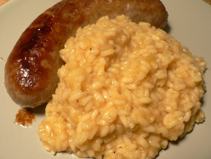

Apple risotto
Looking through the famous Silver Spoon cookbook this afternoon, I happened upon a bizarre recipe for apple risotto. I’m attracted to any meal prepared with fruit, especially apples or pears, so I copied the recipe and started planning my shopping. I had everything except the second apple, so it was pretty easy.

Served with sweet Italian sausage and apple sauce, this made a delicious meal, but I can’t say that I was blown away by the risotto. If I make it again, I’ll make a few small changes. The recipe has the rice cooked in olive oil, when butter would probably be better. Also, it has you add the parboiled and sautéed apples earlier than halfway through the cooking, when their flavor and texture would be better if they were added at the very end of cooking. Finally, five tablespoons of wine doesn’t seem to be enough. I like more white wine flavor in risotto, and I generally use between 3/4 and 1 cup.
Having little sweet bites in the midst of all that butter and cheese and Worcestershire sauce is interesting and pleasing, and I wonder how the dish would taste with blue cheese instead of parmesan. I may try the dish again with these modifications in mind.
Apple risotto (serves 4)
thinly pared strip of lemon rind
2 apples, peeled and diced
3 tablespoons butter
about 6 cups vegetable stock
2 tablespoons olive oil
2 cups risotto rice
5 tablespoons dry white wine
2 tablespoons, parmesan cheese
1 tablespoon Worcestershire sauce
Parboil the lemon rind and apples for 4-5 minutes. Drain well, discard the lemon rind, and pat the apples dry with paper towels.
Melt 1 tablespoon of the butter in a skillet over high heat, add the apples, and cook, stirring frequently, for 5 minutes. Meanwhile, bring the stock to a boil.
Heat the olive oil in another pan, stir in the rice and cook, stirring, until the grains are coated in oil. Sprinkle in the wine and cook until it has evaporated.
Add a ladleful of the hot stock and cook, stirring, until it has been absorbed. Continue adding the stock, a ladleful at a time, and stirring until each addition has been absorbed. This will take 18-20 minutes. After about 6 minutes of the cooking time, add the apples.
When the rice is almost tender, stir in the parmesan, Worcestershire, and remaining butter and season with salt and pepper to taste.
Comments
I get excited about putting fruit in savory foods, too, like stir-fried jelly peppers or different types of sausages. The risotto souds (and looks) amazing, so perhaps I’ll have to give that a try, too!
The parboiling the apple with the lemon peel is typical Silver Palate fussiness; I guess so the apple doesn’t turn brown. But I agree with you that the apple should be added closer to the end so why not just wait until you’re going to use it and then peel and chop it up and just skip all the lemon and parboiling?
I don’t like the sound of the Worcestershire sauce, either, but I do like your idea of trying blue cheese; I think that would pair really well with the apple.
For what it’s worth, I’d suggest giving gorgonzola a try with apples, instead of blue cheese. Perhaps when I make this, I’ll do that, and I’ll post what I find. :)
Thanks, Colin. Gorgonzola is exactly what I had in mind! Please keep us posted.
Mom: you’d be surprised at how many Italian recipes use Worcestershire sauce. I come across it all the time. This book has been out for fifty years, although I don’t know how much the recipes have been edited in that time.
Aha! Silver Spoon, not Silver Palate; I misread your original entry! This is a book I have heard of but never even held in my hands.
But you’re right, I would be surprised at a lot of Italian recipes using Worcestershire sauce, unless they’re written by chefs trying to transcribe what they do in a restaurant kitchen. Worcestershire sauce is a real restaurant kitchen staple and shortcut. But I defy you to find a mention of it in anything by Lidia Bastianich or Marcella Hazan!
HMM… i bought some fresh sweet sausage at the AP (Hastings) today and was going to have a baked potato but now i think i need some risotto – perfect for a gray cold night. (but no apples for me at least not tonight).
This sounds really good and different- an excellent combination with the sausages. I’m hoping that santa claus is going to bring me that cookbook. If he doesn’t, I may have to help him out.
Add a comment